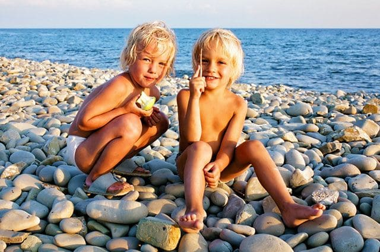
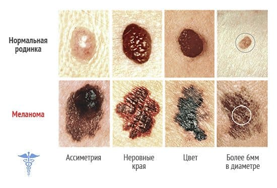
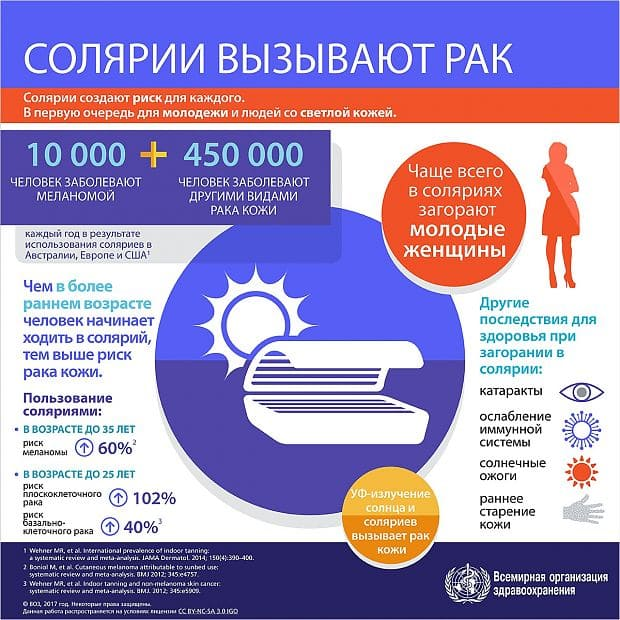

Раздеваю ребенка для осмотра, вижу крепкий загар. Мать видит, что я заметил, улыбается горделиво: «Мы недавно с моря вернулись». Любовь к загару у россиян огромная: не загорел – отпуск прошел напрасно. Хвастаются, сколько раз кожа облезала за лето, прямо-таки соревнование, у кого больше.

Cейчас в развитых странах идет мощная кампания против загара, об этом снимают социальные ролики, выступают по телевизору врачи, информируют в глянцевых журналах… У нас так с курением не борются, как у них с загаром. Но в России об этом пока говорят единицы.
А тем временем исследование французских ученых доказало, что эпидемия смертности от меланомы, которая наблюдалась с 1950-х по 1980-е годы, была вызвана популярной в первой половине XX века гелиотерапией.
Детей тогда целенаправленно подвергали воздействию прямых солнечных лучей или искусственных ультрафиолетовых облучателей.
В то время ошибочно считалось, что УФ-облучение является эффективным и безопасным способом профилактики рахита, способно излечивать многие кожные болезни (даже кожный туберкулез), но, главное, в то время отсутствовали научные данные о связи УФ-облучения с раком кожи. К середине XX века ученые поняли свою ошибку, началась массовая кампания по профилактике загара, и эпидемия смертей от меланомы быстро пошла на спад.
Ультрафиолет опасен, он провоцирует меланому – самый агрессивный вид кожного рака!

Никогда не посещайте солярий, летом используйте солнцезащитный крем, одежду с длинными рукавами и широкополые шляпы. Не увеличивайте риск меланомы у своего ребенка собственными руками!

(Сергей Бутрий "Здоровье ребенка: современный подход")